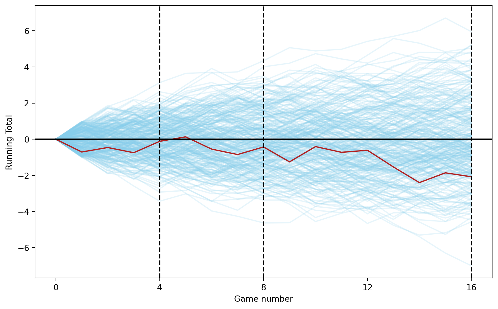
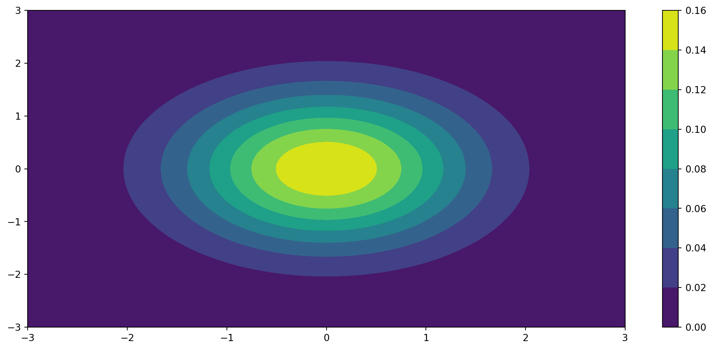

Die Normalverteilung ist die wichtigste Verteilung in der Statistik und wir grundlegend für die statistische Modellierung in diesem Kurs sein.
Zuerst wollen wir uns eine Übersicht über diese Verteilung verschaffen und dann die wichtigsten Eigenschaften kennenlernen. Bevor wir uns die Normalverteilung genauer anschauen, werden wir ein bisschen ausholen, um die Grundlagen aus dem Statistik-Kurs in Erinnerung zu rufen.
B.1 Diskrete Verteilungen
B.2 The Normal Distribution
The normal distribution is a continuous probability distribution. It is also called the Gaussian distribution. The probability density function (pdf) of the normal distribution is given by:
where \mu is the mean and \sigma is the standard deviation. The normal distribution is symmetric around the mean \mu. The standard normal distribution has \mu = 0 and \sigma = 1.
Instead of writing the density function every time we want to refer to the normal distribution, we use the notation X \sim N(\mu, \sigma^2) to denote that the random variable X has a normal distribution with mean \mu and variance \sigma^2.
import pandas as pdimport numpy as npimport matplotlib.pyplot as pltplayers_n =300games_n =16# Create a DataFrame similar to expand_grid in Runif_games = pd.DataFrame( np.array( np.meshgrid( np.arange(1, games_n +1), np.arange(1, players_n +1) )).T.reshape(-1, 2), columns=['game', 'player'])# Add result column with random uniform values between -1 and 1unif_games['result'] = np.random.uniform(-1, 1, size=len(unif_games))# Add initial values for each playerinitial_values = pd.DataFrame( {'player': np.arange(1, players_n +1), 'game': 0, 'result': 0})unif_games = pd.concat([unif_games, initial_values])# Sort values and calculate running total for each playerunif_games = unif_games.sort_values(['player', 'game'])unif_games['running_total'] = unif_games.groupby('player')['result'].cumsum()# Plottingplt.figure(figsize=(10, 6))for player in unif_games['player'].unique(): player_data = unif_games[unif_games['player'] == player] plt.plot(player_data['game'], player_data['running_total'], color='skyblue', alpha=0.2)# First playerplayer_data = unif_games[unif_games['player'] ==1]plt.plot(player_data['game'], player_data['running_total'], color='firebrick', label='Player 1')plt.axhline(0, color='black')for mark in [4, 8, 16]: plt.axvline(x=mark, linestyle='--', color='black')plt.xlabel('Game number')plt.ylabel('Running Total')plt.xticks([0, 4, 8, 12, 16])plt.show()

B.3 The Multivariate Normal Distribution
The multivariate normal distribution is a generalization of the one-dimensional normal distribution to higher dimensions. The probability density function (pdf) of the multivariate normal distribution is given by:
where \mu is the mean vector and \Sigma is the covariance matrix. The multivariate normal distribution is symmetric around the mean \mu. The standard multivariate normal distribution has \mu = 0 and \Sigma = I, where I is the identity matrix.
Code
# Importing the necessary modulesimport numpy as npimport matplotlib.pyplot as pltfrom scipy.stats import multivariate_normal# plt.style.use('seaborn-dark')plt.rcParams['figure.figsize']=14, 6fig = plt.figure()# Initializing the random seedrandom_seed=1000# List containing the variance# covariance valuescov_val = [-0.8, 0, 0.8]# Setting mean of the distributino # to be at (0,0)mean = np.array([0,0])# Storing density function values for # further analysispdf_list = []# Iterating over different covariance valuesfor idx, val inenumerate(cov_val):# Initializing the covariance matrix cov = np.array([[1, val], [val, 1]])# Generating a Gaussian bivariate distribution# with given mean and covariance matrix distr = multivariate_normal(cov = cov, mean = mean, seed = random_seed)# Generating a meshgrid complacent with# the 3-sigma boundary mean_1, mean_2 = mean[0], mean[1] sigma_1, sigma_2 = cov[0,0], cov[1,1] x = np.linspace(-3*sigma_1, 3*sigma_1, num=100) y = np.linspace(-3*sigma_2, 3*sigma_2, num=100) X, Y = np.meshgrid(x,y)# Generating the density function# for each point in the meshgrid pdf = np.zeros(X.shape)for i inrange(X.shape[0]):for j inrange(X.shape[1]): pdf[i,j] = distr.pdf([X[i,j], Y[i,j]])# Plotting the density function values key =131+idx ax = fig.add_subplot(key, projection ='3d') ax.plot_surface(X, Y, pdf, cmap ='viridis') plt.xlabel("x1") plt.ylabel("x2") plt.title(f'Covariance between x1 and x2 = {val}') pdf_list.append(pdf) ax.axes.zaxis.set_ticks([])
Code
import numpy as npimport matplotlib.pyplot as pltfrom scipy.stats import multivariate_normal# Parameters to set for Gaussian distributionmu_x =0sigma_x = np.sqrt(5)mu_y =0sigma_y = np.sqrt(5)# Create grid and multivariate normalx = np.linspace(-10, 10, 500)y = np.linspace(-10, 10, 500)X, Y = np.meshgrid(x, y)MVN = multivariate_normal(mean=[mu_x, mu_y], cov=[[sigma_x, 0], [0, sigma_y]])pos = np.empty(X.shape + (2,))pos[:, :, 0] = Xpos[:, :, 1] = YZ = MVN.pdf(pos)# Create planex_p =0y_p = np.linspace(-10, 10, 500)z_p = np.linspace(0, 0.02, 500)Y_p, Z_p = np.meshgrid(y_p, z_p)# Finding closest idx values of X mesh to x_ptol =1e-4idx_x_p = (np.where(x < x_p+tol) and np.where(x > x_p-tol))[0][0]# Select the corresponding values of X, Y, Z (carefully switch X and Y)x_c, y_c, z_c = Y[idx_x_p], X[idx_x_p], Z[idx_x_p]# Plotfig = plt.figure(figsize=plt.figaspect(0.5))ax = fig.add_subplot(1, 1, 1, projection='3d')ax.plot_surface(X, Y, Z, cmap='viridis', linewidth=0, zorder=0)ax.plot_surface(x_p, Y_p, Z_p, color='r', linewidth=0, alpha=0.5, zorder=5)ax.plot(x_c, y_c, z_c, zorder=10)plt.tight_layout()
import numpy as npimport matplotlib.pyplot as pltfrom scipy.stats import multivariate_normal# Define the mean and covariance matrix for the bivariate normal distributionmean = np.array([0, 0])cov = np.array([[1, 0], [0, 1]])# Create a grid of valuesx = np.linspace(-3, 3, 100)y = np.linspace(-3, 3, 100)X, Y = np.meshgrid(x, y)# Compute the bivariate normal probabilities over the gridrv = multivariate_normal(mean, cov)Z = rv.pdf(np.dstack((X, Y)))# Plot the bivariate normal probabilitiesplt.contourf(X, Y, Z)plt.colorbar()plt.show()

Code
import numpy as npfrom scipy.stats import multivariate_normalfrom scipy.integrate import dblquad# Define the mean and covariance matrix for the bivariate normal distributionmean = np.array([0, 0])cov = np.array([[1, 0], [0, 1]])# Define the bivariate normal distributionrv = multivariate_normal(mean, cov)# Define the limits of the intervalx_interval = [0, 1]y_interval = [0, 1]# Define the function to integratefunc =lambda x, y: rv.pdf([x, y])# Compute the probability over the interval using numerical integrationprob, _ = dblquad(func, x_interval[0], x_interval[1], lambda x: y_interval[0], lambda x: y_interval[1])print(f"The probability over the interval is {prob}")
The probability over the interval is 0.11651623566859808
Code
def discretize_bivariate_normal(mean, cov, x_intervals, y_intervals):# Define the bivariate normal distribution rv = multivariate_normal(mean, cov) grid = np.array( np.meshgrid( np.array(x_intervals + [np.inf]), np.array(y_intervals + [np.inf]) ) ).T.reshape(-1, 2)# Compute the probability over the interval using numerical integration x_int = [-np.inf] + x_intervals + [np.inf] y_int = [-np.inf] + y_intervals + [np.inf] probs = np.zeros((len(x_int) -1, len(y_int) -1))for i inrange(len(x_int) -1):for j inrange(len(y_int) -1): xb_l, xb_u = x_int[i:i+2] yb_l, yb_u = y_int[j:j+2] p1 = rv.cdf([xb_u, yb_l]) if xb_u !=-\ np.inf and yb_l !=-np.inf else0 p2 = rv.cdf([xb_l, yb_u]) if xb_l !=-\ np.inf and yb_u !=-np.inf else0 p3 = rv.cdf([xb_l, yb_l]) if xb_l !=-\ np.inf and yb_l !=-np.inf else0 prob = rv.cdf([xb_u, yb_u]) - p1 - p2 + p3 probs[i, j] = probreturn grid, probsgr, pr = discretize_bivariate_normal( np.array([0, 0]), np.array([[1, 0], [0, 1]]), [-1, 0], [-1, 0])
# This can be done using the cumulative sum and subtracting the previous value# by grouping on the slower changing variabledf = pd.DataFrame(gr, columns=['x', 'y'])df['prob'] = pr.flatten()df